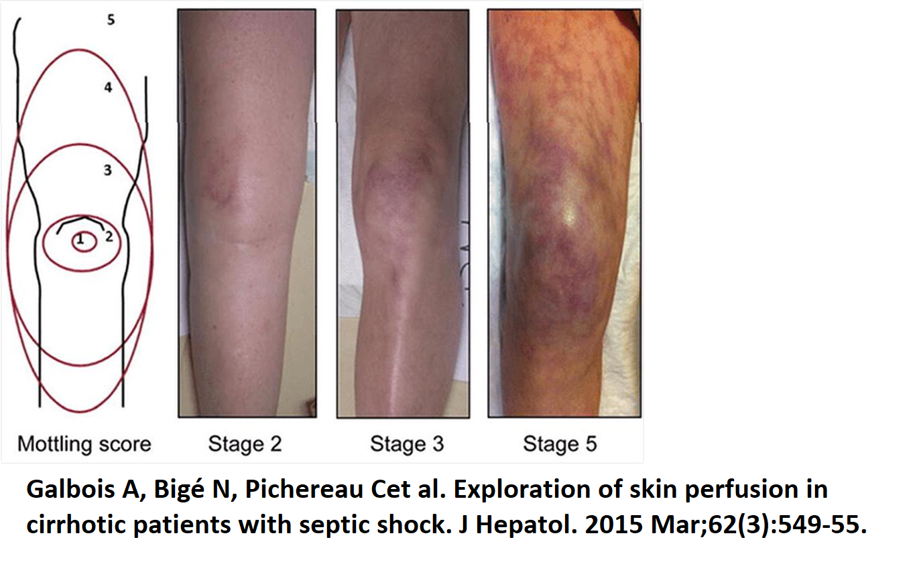

Module N3
Recognizing shock at the bedside
The last module left us with an uncomfortable fact, that oxygen delivery can be failing while the pressure and the labs still read reassuringly, so recognizing shock has to begin with something faster and more structured than a single number. The quickest way to get a read on whether oxygen is actually reaching the tissues is to assess the patient's own end-organs. Three of them can be checked at a glance. We call the screen B.U.S.

Each letter is an end-organ reporting on its own perfusion. The brain shows low delivery as new confusion, agitation, or drowsiness; the kidneys show it as oliguria under about 30 mL/hr; the skin shows it as a capillary refill beyond three seconds or as mottling over the knees.
In critically ill patients, even these low-tech indicators of perfusion can be challenging to interpret. Physical examination findings are often unreliable as patients may be anuric or on dialysis, under warming blankets, or sedated, all of which limit the utility of mental status, urine output, and temperature as perfusion markers.
Why not just follow the pressure?
As we reviewed earlier, it is tempting to let the mean arterial pressure stand in for perfusion, but the relationship is treacherous. Blood pressure is not flow. It is flow multiplied by tone, plus the pressure at which the small vessels tend to close:
Using MAP alone does not determine whether tone or cardiac output is responsible for the low pressure. In addition, using MAP alone as a stand-in for cardiac output during resuscitation only works if you assume that SVR holds steady during the intervention. In the ICU that assumption fails because our interventions (the pressors, the fluids, the positive-pressure ventilation) alter our baseline assumptions. A comfortable MAP can therefore sit on top of a circulation that is barely delivering, propped up by clamped-down tone while flow quietly fails.
Given these limitations, finding alternative and reliable surrogates to evaluate oxygen delivery (DO2) becomes essential.
Corroborating the screen: the skin as a window
Capillary refill time is far more informative than its simplicity suggests. Done to the standard used in the landmark trials, you press a transparent glass slide firmly against the distal phalanx of a finger on the hand without the arterial line, hold it for a full ten seconds, release, and start a stopwatch. Return of color beyond three seconds is abnormal. That cutoff is not arbitrary. When skin blood flow is mapped against refill time it falls in a near-exponential decay whose inflection sits right around three seconds, so the threshold marks a genuine physiologic cliff rather than a convention. And because the skin is the first vascular bed the body sacrifices under sympathetic drive, refill tracks systemic flow and even splanchnic organ perfusion, and it quickly responds to hemodynamic changes.
In the landmark ANDROMEDA-SHOCK trial, resuscitating septic shock to a normal capillary refill produced less organ dysfunction at 72 hours and a strong trend toward lower 28-day mortality (34.9 versus 43.4 percent) than resuscitating to lactate. A Bayesian reanalysis put the probability that the refill strategy is superior above 90 percent, and a post hoc look suggested the lactate arm was actually harmed by chasing a number that lags perfusion, driving unnecessary fluid and pressors into patients whose skin was already warm. Its 2025 successor, ANDROMEDA-SHOCK2, built refill time into a personalized algorithm and again came out ahead, with less fluid given and organ support withdrawn sooner. For a sign you read with your eyes and a glass slide, that is remarkable validation.
Mottling is the second skin window. The violaceous, reticular discoloration that appears over the kneecap can be graded 0 to 5 by how far it climbs the leg, from none, to a patch over the patella, out to spread beyond the upper thigh. It is highly reproducible between observers and tracks short-term mortality closely, and crucially it does so independently of vasopressor dose, so mottling that persists on a rising pressor should not be explained away. Physiologically it is the visible print of a collapsing microcirculation: patchy shutdown of nutritive skin flow, regional endothelial dysfunction, and redistribution of blood away from the periphery toward the vital organs.

Reading the metabolism when a central line is inserted
When a central line is in, three numbers let you interrogate the tissues more directly, and each answers a different question. Lactate over about 2 mmol/L flags that cells are leaning on anaerobic glycolysis, but it is subtler than a simple hypoxia meter: the lactate ion is not itself the acid (the reaction that makes it actually consumes two protons), and it doubles as a redox buffer and a stress signal, so it is best read as a trend rather than a verdict. As previously noted, ScvO2 reports the balance of delivery and consumption. From the Fick relationship it approximates the fraction of delivered oxygen left over after the tissues extract what they need:
A low ScvO2 therefore points to a flow-limited state, cardiogenic or hypovolemic, that should respond to more output. A normal or high value in a clearly sick patient is more ominous, because it can mean oxygen is being delivered but not extracted, the microcirculatory shunting and cellular dysoxia of sepsis. The (Pv-aCO2) gap completes the set: above about 6 mmHg it signals that flow is too slow to wash CO2 out of the tissues, and because CO2 is highly diffusible it responds faster than lactate. In the last module, we reviewed a framework established by Daniel De Backer which assimilates these three markers together. While these parameters can corroborate a cause of shock (but not adjudicate), it is useful to use them together since microcirculatory dysfunction can decouple any one from the true state.
Using hemodynamic parameters to assess shock
Once B.U.S. and these markers say a patient is in shock, the next step is to take apart what is driving the process: tone (systemic vascular resistance), filling (right atrial pressure), and flow (cardiac output). When the etiology is unclear or the shock is worsening, an advanced look measures the three levers directly, and their pattern begins to name the type.
| Shock type | CO (Flow) | RAP (Filling) | SVR (Tone) |
|---|---|---|---|
| Cardiogenic (LV) | ↓ | ↑ | ↑ |
| Obstructive (RV) | ↓ | ↑ | ↑ |
| Distributive | ↔/↑ | ↓ | ↓ |
| Hypovolemic | ↓ | ↓ | ↑ |
All of this recognizes shock types, but it does not explain the machinery of the circulation seen as a whole, a single closed loop broken into a few interfaces. It is where the next module begins and where the physiology finally connects to the shock-type grid.
References
- Hernández G, Ospina-Tascón GA, Damiani LP, et al. Effect of a resuscitation strategy targeting peripheral perfusion status vs serum lactate levels on 28-day mortality among patients with septic shock (ANDROMEDA-SHOCK). JAMA. 2019;321(7):654-664.
- Hernández G, Ospina-Tascón GA, Kattan E, et al. Personalized hemodynamic resuscitation targeting capillary refill time in early septic shock (ANDROMEDA-SHOCK-2). JAMA. 2025;334(22):1988-1999.
- Zampieri FG, Damiani LP, Bakker J, et al. Effects of a resuscitation strategy targeting peripheral perfusion status versus serum lactate levels among patients with septic shock: a Bayesian reanalysis of the ANDROMEDA-SHOCK trial. Am J Respir Crit Care Med. 2020;201(4):423-429.
- Kattan E, Hernández G, Ospina-Tascón GA, et al. A lactate-targeted resuscitation strategy may be associated with higher mortality in patients with septic shock and normal capillary refill time: a post hoc analysis of the ANDROMEDA-SHOCK study. Ann Intensive Care. 2020;10(1):114.
- Jacquet-Lagrèze M, Pernollet A, Kattan E, et al. Prognostic value of capillary refill time in adult patients: a systematic review with meta-analysis. Crit Care. 2023;27:473.
- Morin A, Missri L, Urbina T, et al. Relationship between skin microvascular blood flow and capillary refill time in critically ill patients. Crit Care. 2025;29:57.
- Hernández G, Luengo C, Bruhn A, et al. When to stop septic shock resuscitation: clues from a dynamic perfusion monitoring. Ann Intensive Care. 2014;4:30.
- Ait-Oufella H, Lemoinne S, Boelle PY, et al. Mottling score predicts survival in septic shock. Intensive Care Med. 2011;37(5):801-807.
- Dumas G, Lavillegrand JR, Joffre J, et al. Mottling score is a strong predictor of 14-day mortality in septic patients whatever vasopressor doses and other tissue perfusion parameters. Crit Care. 2019;23:211.
- Galbois A, Bigé N, Pichereau C, et al. Exploration of skin perfusion in cirrhotic patients with septic shock. J Hepatol. 2015;62(3):549-555.
- De Backer D. Detailing the cardiovascular profile in shock patients. Crit Care. 2017;21(Suppl 3):311.
- Ospina-Tascón GA, Umaña M, Bermúdez W, et al. Combination of arterial lactate levels and venous-arterial CO2 to arterial-venous O2 content difference ratio as markers of resuscitation in patients with septic shock. Intensive Care Med. 2015;41(5):796-805.
- Bakker J, Coffernils M, Leon M, Gris P, Vincent JL. Blood lactate levels are superior to oxygen-derived variables in predicting outcome in human septic shock. Chest. 1991;99:956-962.
- Magder S. Central venous pressure monitoring. J Intensive Care Med. 2007;22:44-51.
- Rivers E, Nguyen B, Havstad S, et al. Early goal-directed therapy in the treatment of severe sepsis and septic shock. N Engl J Med. 2001;345(19):1368-1377.